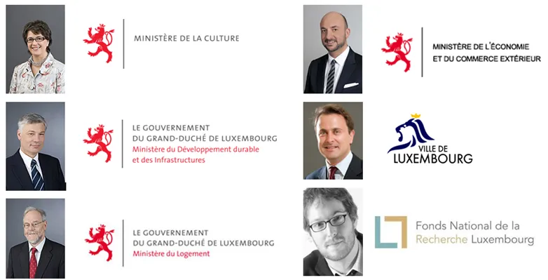

Aujourd’hui c’est la veille du grand jour : après notre mission-test au Vanuatu, puis notre première mission à domicile, nous décollerons officiellement de l’aéroport international du grand duché du Luxembourg, demain ! Pour l’occasion des invités prestigieux sont là :
Mme Octavie Modert, Ministre de la Culture
M. Claude Wiseler, Ministre du Développement Durable et des Infrastructures
M. Marco Schank, Ministre du logement et Ministre délégué au Développement durable et aux Infrastructures

M. Etienne Schneider, Ministre de l’Economie et du Commerce extérieur
M. Xavier Bettel, Bourgmestre de la Ville du Luxembourg
M. Joseph Rodesch, Fonds National de la Recherche – Luxembourg